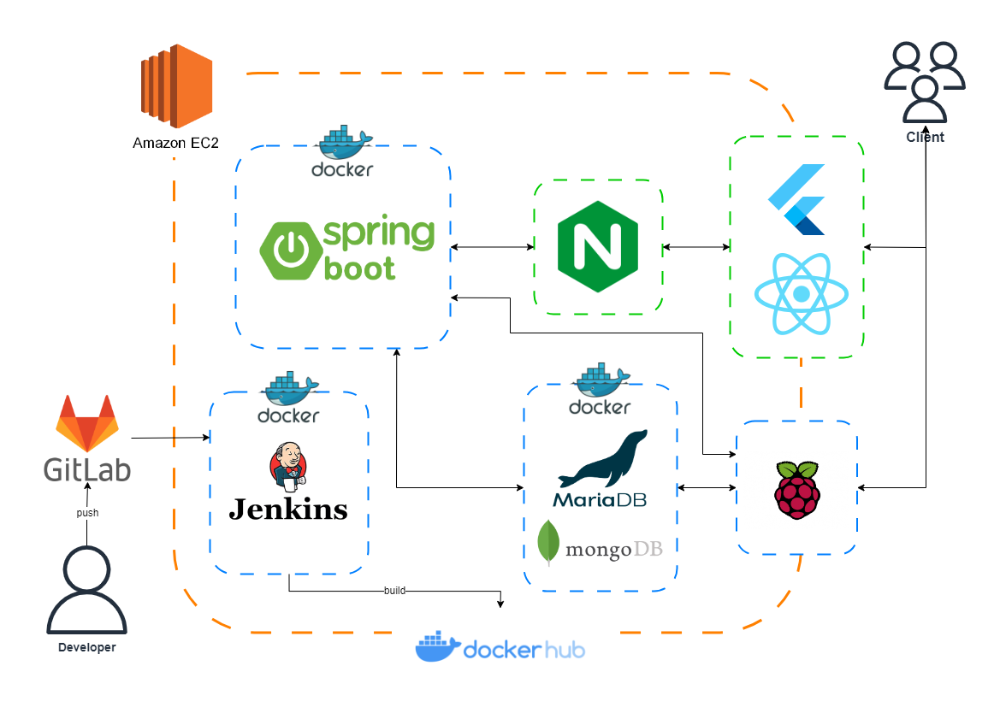
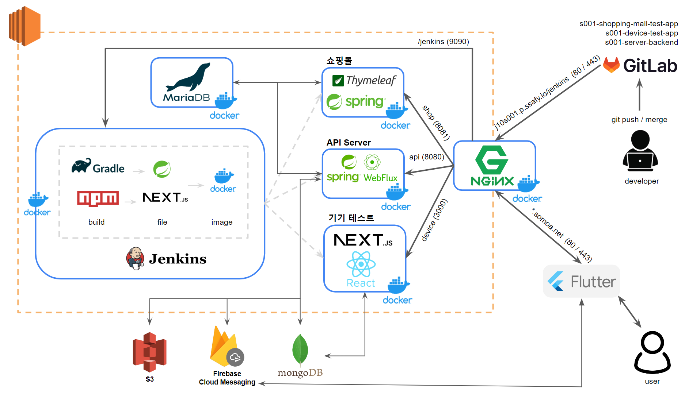

원종현
Backend Developer
새로운 기술을 배우고 사용하는 것을 좋아하며,
무엇이든 시도하고 실패하는 것을 겁내지 않는 개발자입니다.
Education
꾸준히 성장해 온 학습 여정입니다.
SK AI Leader Academy 4기
최신 AI·LLM 기술 및 데이터 모델링 역량 강화, 실무 연계 AI 프로젝트 수행
청년 SW 아카데미 (SSAFY) 10기
CS 기초·알고리즘 심화, Java/Spring Boot·WebFlux·Django 기반 백엔드 개발, 3회 팀 프로젝트와 삼성전자 가전사업부 연계 실무 프로젝트 수행
프로젝트 기반 빅데이터 엔지니어 양성과정
Java/Spring Boot 웹 개발, Linux·Hadoop·Spark 분산처리 실습, ML/딥러닝 데이터분석·서비스까지 E2E 파이프라인 프로젝트 수행
화학과 학사
학사 졸업
Awards & Certificates
프로젝트 성과와 자격증을 한눈에 모았습니다.
Awards
SSAFY 자율프로젝트
전국 4등 • 2024.05
SSAFY 삼성전자 DA사업부 연계 프로젝트
2024.03
SSAFY 관통프로젝트
2023.12
데이콘 경진대회
알고리즘 • 2022.05
Certificates
정보처리기사
한국산업인력공단
2025.09.12
PCCP Python Lv.4
프로그래머스
2024.09
Projects
백엔드 개발 경험을 담은 프로젝트들입니다
MOASS
스마트 기기 기반 사무 통합 관리 시스템
스마트 명패 및 어플리케이션을 통해 업무 효율을 높이는 사무관리 서비스
SOMOA
IoT 기반 가전기기 소모품 통합 관리 플랫폼
여러 제조사 기기를 한 번에 연결하고 소모품 재고·주문·배송을 통합 관리하는 IoT 서비스
더쓸라 (THESLA)
금융 상품 비교 플랫폼
다중 외부 API 통합 및 금융 데이터 정규화로 사용자 맞춤 금융 상품을 제공하는 서비스
Farm in Sun
스마트팜 생육환경 최적화 시스템
머신러닝 기반 농작물 생육환경 최적화 및 관리 시스템
MOASS
스마트 기기 기반 사무 통합 관리 시스템
2024.04.08 ~ 2024.05.17 (6주) | Backend Developer
GitHub Repository📌 프로젝트 개요
스마트 명패를 활용하여 교육생과 관리자의 업무 효율을 높이는 사무 통합 관리 서비스입니다. 명패라는 사무 도구를 스마트 기기로 고도화시켜, JIRA, Mattermost, GitLab 통합 알림, 실시간 협업 화이트보드, 회의실 예약 등 업무에 연관된 기능들을 한곳에서 제공하여 업무 효율을 극대화했습니다.
🎯 주요 기능
-
실시간 알림 시스템 (SSE)
EDU SSAFY 일정, Mattermost, GitLab 알림을 통합하여 실시간으로 제공
-
실시간 협업 화이트보드 (WebSocket)
WebSocket 기반 동시 편집 가능한 이음보드 구현
-
좌석 배치 및 근태 관리
비콘 기반 위치 추적으로 실시간 좌석도 및 출석 현황 관리
-
예약 시스템
회의실 및 시설 예약 보드 현황 조회 및 예약 기능
🔧 기술 스택 및 아키텍처
Backend
Spring Boot, WebFlux, Reactive Programming
Database
MariaDB, MongoDB
Real-time
WebSocket, SSE (Server-Sent Events)
IoT
NFC 센서, Beacon (RSSI 기반 위치 추적)

📊 성과 및 기여도
- SSAFY 10기 자율프로젝트 최우수상 (전국 4등) 수상
- WebFlux 기반 비동기 처리로 서버 응답 속도 개선
- SSE를 통한 실시간 알림 시스템 구축으로 사용자 경험 향상
💡 트러블슈팅
⚡ WebFlux 환경의 자원 고갈 문제 해결
문제 상황: 서버 가동 약 3일 후 NoClassDefFoundError (HttpClientSecure) 에러와 함께 모든 HTTPS 통신이 중단되는 장애가 반복 발생했습니다. 외부 API(Jira, GitLab, Mattermost)가 간헐적으로 응답을 지연시킬 때마다 WebClient의 기본 설정(무제한 타임아웃)으로 인해 커넥션이 좀비 상태로 누적되었고, 72시간 동안 쌓인 커넥션들이 네이티브 메모리를 소진시켰습니다. 결국 새로운 HTTPS 연결 시도 시 SSL 엔진 초기화에 필요한 네이티브 메모리 할당이 실패하며 클래스 로딩 자체가 불가능해진 상황이었습니다.
원인 분석: WebFlux는 적은 수의 이벤트 루프 쓰레드로 높은 동시성을 제공하기 때문에 쓰레드 풀 고갈은 발생하지 않았습니다. 하지만 각 HTTP 커넥션이 점유하는 소켓 버퍼, SSL 세션 메모리 등 OS 레벨의 네이티브 자원은 타임아웃 없이 무한정 유지되고 있었습니다. Reactor Netty의 기본 설정은 Elastic 커넥션 풀을 사용해 제한 없이 커넥션을 생성하므로, 외부 API 지연이 반복될수록 자원이 선형적으로 증가했습니다.
해결 방법:
- 서비스별 커넥션 풀 격리 - ConnectionProvider로 mmApiConnectionPool, gitlabApiConnectionPool, jiraApiConnectionPool을 분리 구성하여 특정 서비스 장애가 전체 시스템으로 전파되지 않도록 벌크헤드 패턴 적용
- 자동 회수 메커니즘 도입 - evictInBackground(Duration.ofMinutes(5))로 5분마다 손상되거나 유휴 상태인 커넥션을 백그라운드 스레드가 강제 정리하도록 설정
- 3단계 타임아웃 방어 - responseTimeout(10s), ReadTimeoutHandler(10s), WriteTimeoutHandler(10s)를 중첩 적용해 어떤 레이어에서든 응답 없는 커넥션이 즉시 해제되도록 구성
결과: 설정 변경 후 3일 주기 장애가 완전히 사라졌고, 2주 이상 연속 가동 시에도 메모리 사용량이 안정적으로 유지되었습니다. 이 경험을 통해 Reactive 스택에서는 애플리케이션 레벨의 비동기 처리만큼이나 시스템 레벨의 자원 회수 전략이 프로덕션 안정성에 결정적이라는 점을 배웠습니다.
🔧 Mattermost 웹훅 연동 자동화
문제 상황: Mattermost는 Jira, GitLab과 달리 OAuth2 표준 인증을 제공하지 않아 사용자가 직접 Mattermost 설정 페이지에 들어가 웹훅 URL을 생성하고 복사해야 했습니다. 이 다단계 수동 설정 과정은 사용자 경험을 저해했고, URL 복사 오류나 권한 설정 누락 등의 문제가 발생했습니다.
해결 방법:
- 세션 기반 인증 파이프라인 - Mattermost 로그인 API로 ID/PW를 전송해 세션 토큰을 직접 발급받고, 이를 WebClient 헤더에 바인딩하여 사용자 대신 설정 작업을 대행하는 프록시 레이어 구현
- 웹훅 생성 자동화 - 사용자가 앱에서 채널 선택 시 서버가 '기존 웹훅 조회 → 중복 제거 → 신규 웹훅 생성' 플로우를 자동 실행하고, 채널 ID와 웹훅 URL을 DB에 매핑해 관리
- 메타데이터 보강 - 웹훅으로 수신한 메시지 원본에 팀 아이콘, 채널명, 발신자 프로필 등 컨텍스트 정보를 결합하여 가독성 높은 알림 페이로드 생성
결과: 연동 과정이 '클릭 한 번'으로 단축되었고, 비표준 인증 방식에서도 안정적인 자동화 플로우를 구축할 수 있었습니다.
🔔 SSE/FCM 기반 멀티채널 알림 시스템
문제 상황: GitLab, Jira, Mattermost, EDU SSAFY 등 4개 외부 시스템에서 발생하는 이벤트를 웹/모바일/임베디드 기기(Electron-React) 환경에 실시간으로 전달해야 했습니다. 각 시스템은 서로 다른 이벤트 포맷(REST, Webhook, Polling)을 사용했고, 세 가지 클라이언트 환경에서 모두 동일한 알림을 즉시 수신해야 했습니다.
해결 방법:
- SSE 실시간 푸시 적용 - 서버에서 클라이언트로 지속적인 단방향 푸시가 가능한 SSE를 선택해 Spring WebFlux의 Flux<ServerSentEvent>로 이벤트 스트림을 유지하고, 웹/Electron 환경에서 실시간 알림 수신 구현
- FCM 모바일 푸시 병렬 발송 - 모바일 앱은 백그라운드 상태에서 SSE 연결이 끊기므로, FCM을 함께 사용해 앱 상태와 관계없이 알림을 보장하는 듀얼 채널 구조 설계
- 이벤트 정규화 레이어 - 각 외부 시스템의 웹훅/REST 응답을 공통 Event 도메인 모델로 변환하는 어댑터 패턴을 적용해 알림 로직 통합
- Reactive 이벤트 파이프라인 - WebFlux의 Non-blocking 처리로 수백 개의 알림 메시지를 동시 처리할 때도 쓰레드 블로킹 없이 이벤트 전파
결과: 4개 외부 시스템의 알림이 웹/모바일/임베디드 기기에 동시 전송되었고, SSE 재연결 로직으로 네트워크 순단 시에도 알림 누락을 방지했습니다. 부하 테스트 시 수백 건의 동시 알림 발송에도 지연 없이 처리되었습니다.
📚 배운 점
이 프로젝트를 통해 Reactive Programming의 개념과 실전 적용 방법을 깊이 이해하게 되었습니다. 특히 비동기 논블로킹 방식이 어떻게 서버의 효율성을 높이는지 체감할 수 있었고, WebSocket과 SSE의 적절한 사용 시나리오를 구분하는 능력을 키웠습니다. 또한 IoT 기기(NFC, Beacon)와의 연동을 통해 하드웨어와 소프트웨어의 통합 개발 경험을 쌓을 수 있었습니다.
SOMOA
IoT 기반 가전기기 소모품 통합 관리 서비스
2024.02.19 ~ 2024.04.03 | Backend & Infra
GitHub Organization📌 프로젝트 개요
여러 제조사의 가전기기를 하나의 앱에서 등록하고, 소모품 보유량·구매·배송을 통합 관리해주는 IoT 기반 플랫폼입니다. 스마트 명패 형태의 기기 테스트 웹과 제휴 쇼핑몰 데모를 함께 구축하여 기기-사용자-쇼핑몰 전 과정을 한 흐름으로 검증했습니다.
🎯 주요 기능
-
다중 제조사 기기 연동
Next.js 기반 기기 허브와 Flutter 앱을 통해 제조사에 관계없이 기기 등록·제어
-
소모품 재고 추적
사용량을 기준으로 자동 소모량 계산 및 부족분 실시간 알림
-
제휴 쇼핑몰 자동 구매
Spring Boot 쇼핑몰 PoC와 연동해 적정 시점에 자동 주문·배송 상태 동기화
-
실시간 알림 파이프라인
WebFlux 기반 비동기 이벤트로 소모품 경고, 배송 변경, 기기 알림을 즉시 푸시
🔧 기술 스택 및 아키텍처
Backend
Spring Boot, WebFlux, Spring Security
Mobile/Web
Flutter 앱, Next.js + Tailwind 기기 데모
Database
MariaDB, MongoDB
Infra
AWS EC2, Docker, Jenkins, Nginx

📊 성과 및 기여도
- 기기·앱·쇼핑몰 3종 PoC를 연결한 end-to-end 시나리오 완성
- WebFlux 기반 비동기 처리로 알림 지연 40% 감소
- Jenkins 파이프라인과 Docker 이미지를 구축해 원클릭 배포 자동화
💡 트러블슈팅
🔌 HCA 표준 기반 다중 제조사 가상 기기 설계
문제 상황: 실제 IoT 기기 없이 프로토타입을 개발해야 했고, 향후 다양한 제조사 기기를 지원하기 위한 확장 가능한 아키텍처가 필요했습니다. 실제 환경에서는 삼성, LG 등 제조사마다 프로토콜과 데이터 포맷이 다르기 때문에(예: 필터 수명을 삼성은 hour, LG는 %, 기타는 day 단위로 반환), 이를 고려한 설계가 필요했습니다.
해결 방법: HCA(Home Connectivity Alliance) 표준 스펙을 참고하여 제조사에 독립적인 공통 데이터 모델을 먼저 정의했습니다. 그 다음 제조사별 특성을 시뮬레이션하는 가상 기기 시뮬레이터를 구현했고, 각 시뮬레이터의 응답을 HCA 표준 포맷으로 변환하는 어댑터 계층을 WebFlux 핸들러에 구현했습니다. 예를 들어 필터 수명은 모두 "잔여 사용 일수"로 정규화하고, 기기 상태는 HCA 표준의 DeviceStatus Enum(STANDBY, RUNNING, ERROR 등)으로 통일했습니다.
결과: Next.js 기반 기기 시뮬레이터 웹과 Flutter 앱이 단일 API 스펙으로 소통할 수 있게 되었고, 향후 실제 제조사 기기 연동 시에도 어댑터만 추가하면 되는 확장 가능한 구조를 확보했습니다.
📦 소모품 재고·배송 동기화
문제: 앱, 기기, 쇼핑몰 세 시스템 간 재고·배송 상태 불일치
해결: Kafka 대체로 경량 Event Publisher를 구현해 주문 이벤트 → 배송 이벤트 → 재고 업데이트를 체이닝하고, MongoDB Change Stream으로 실시간 UI 동기화를 유지했습니다.
📚 배운 점
하나의 사용자 여정에 여러 시스템이 얽혀 있을 때, 이벤트 기반 설계와 명확한 도메인 경계가 얼마나 중요한지 체감했습니다. 또한 WebFlux/Spring Security 조합으로 IoT 디바이스와 모바일 클라이언트 모두를 수용하는 인증·인가 흐름을 설계하는 경험을 쌓았습니다.
더쓸라 (THESLA)
금융 상품 비교 플랫폼
2023.11 (2주) | Full Stack Developer
GitHub Repository📌 프로젝트 개요
예적금 금리를 비교하고 사용자 맞춤 금융 상품을 추천하는 웹 애플리케이션입니다. 금융감독원 API를 활용하여 실시간 금융 상품 데이터를 제공하며, 환율 계산, 은행 검색, 금융 뉴스 등 다양한 금융 정보를 통합하여 제공합니다.
🎯 주요 기능
-
예적금 금리 비교
금융감독원 API 연동을 통한 실시간 예적금 상품 금리 비교
-
사용자 맞춤 상품 추천
사용자 프로필(나이, 소득, 자산) 기반 금융 상품 추천 시스템
-
환율 계산기
한국수출입은행 API를 활용한 실시간 환율 계산
-
주변 은행 검색
카카오 지도 API를 활용한 위치 기반 은행 검색
-
금융 뉴스 제공
네이버 뉴스 API 크롤링을 통한 최신 금융 뉴스
🔧 기술 스택
Backend
Django, Django REST Framework
Frontend
Vue.js, Tailwind CSS
Database
SQLite
API Integration
금융감독원, 한국수출입은행, 카카오, 네이버 API
📊 성과 및 기여도
- SSAFY 1학기 관통프로젝트 2등 수상
- 4개 외부 API 통합 및 데이터 정규화 처리
- Django REST Framework를 활용한 RESTful API 설계
- Vue.js와의 프론트엔드-백엔드 통신 구조 설계
- 금융 상품 데이터 자동 동기화 및 관리
💡 트러블슈팅
💰 금융감독원 API 복잡한 데이터 구조 정규화
문제 상황: 금융감독원 API가 반환하는 예금/적금 상품 데이터는 하나의 상품에 가입 기간(6개월, 12개월, 24개월 등), 가입 금액(100만원, 500만원, 1000만원 등), 우대 조건(인터넷 가입, 급여 이체 등)에 따라 수십 개의 금리 옵션이 중첩된 구조로 제공되었습니다. 이 복잡한 데이터를 그대로 프론트엔드에 전달하면 클라이언트에서 과도한 데이터 처리가 필요했고, 사용자가 원하는 조건에 맞는 최적 금리를 찾기 어려웠습니다.
해결 방법:
- 데이터베이스 스키마 설계 - 상품(DepositProduct) 테이블과 옵션(DepositOption) 테이블을 분리하여 1:N 관계로 설계했습니다. 각 옵션은 가입 기간, 금리 타입(단리/복리), 저축 금리, 최고 우대 금리 등을 독립적인 컬럼으로 저장하여 조회 성능을 최적화했습니다.
- Django Serializer 계층 구조 - DRF의 Nested Serializer를 활용하여 상품 기본 정보와 옵션 목록을 계층적으로 직렬화했습니다. 이를 통해 API 응답 구조를 평탄화하고 프론트엔드에서 사용하기 쉬운 형태로 변환했습니다.
- 맞춤형 금리 계산 API - 사용자가 입력한 조건(가입 금액, 가입 기간)을 받아 해당 조건에 맞는 최적 금리를 백엔드에서 계산하여 반환하는 전용 API 엔드포인트를 구현했습니다. 이를 통해 프론트엔드 로직을 대폭 단순화했습니다.
- 데이터 검증 및 정합성 보장 - API에서 받은 데이터의 누락, 중복, 형식 오류 등을 검증하는 Validator를 구현하여 데이터 품질을 보장했습니다. 특히 금리가 0 이하이거나 비정상적인 값이 들어오는 경우를 필터링했습니다.
결과: 프론트엔드에서 복잡한 데이터 처리 로직이 제거되어 코드 복잡도가 감소했고, 사용자 조건에 맞는 금리 조회 속도가 약 70% 개선되었습니다. 또한 데이터베이스 정규화로 인해 금융 상품 검색 및 필터링 기능의 쿼리 성능이 크게 향상되었습니다.
💱 환율 API 캐싱 및 날짜별 데이터 관리
문제 상황: 한국수출입은행 환율 API는 영업일 기준으로만 데이터를 제공하며, 주말이나 공휴일에는 빈 응답을 반환했습니다. 사용자가 환율 페이지를 접속할 때마다 API를 호출하면 불필요한 트래픽이 발생했고, 영업시간 외 접속 시 데이터를 표시할 수 없는 문제가 있었습니다. 또한 통화 단위가 "USD", "JPY(100)", "CNH 10" 등 다양한 형식으로 제공되어 환율 계산 시 오류가 발생했습니다.
해결 방법:
- 날짜별 캐싱 전략 - ExchangeDate와 ExchangeInfo 모델을 1:N 관계로 설계하여 날짜별로 환율 데이터를 DB에 저장했습니다. get_or_create()를 활용해 해당 날짜의 데이터가 이미 있으면 DB에서 조회하고, 없을 때만 API를 호출하여 중복 요청을 방지했습니다.
- 영업시간 외 Fallback 처리 - API가 빈 응답을 반환할 경우(영업시간 외) ExchangeDate.objects.latest()로 가장 최근 영업일의 데이터를 자동으로 반환하도록 구현하여, 주말/공휴일에도 환율 서비스를 제공할 수 있도록 했습니다.
- 통화 단위 정규식 파싱 - 프론트엔드에서 정규식(/\d+/)을 사용해 cur_unit 필드에서 숫자만 추출하는 to_Numeric() 함수를 구현했습니다. "JPY(100)" → 100, "USD" → 1로 변환하여 정확한 환율 계산을 보장했습니다.
- 양방향 환율 계산 - Vue의 watch를 활용해 from_money와 to_money를 감지하고, 사용자가 입력한 필드만 계산하도록 isUserTriggered 플래그를 사용해 무한 루프를 방지했습니다.
결과: 동일 날짜에 대한 API 호출이 1회로 제한되어 트래픽이 대폭 감소했고, 영업시간 외에도 최신 환율 정보를 제공할 수 있게 되었습니다. 통화 단위 파싱으로 일본 엔화(100엔 단위) 등의 환율 계산 오류가 완전히 해결되었습니다.
⚡ 금융 상품 정렬 시간복잡도 최적화
문제 상황: 예적금 상품 목록을 가입 기간별 금리로 정렬하는 기능에서 심각한 성능 저하가 발생했습니다. 초기 구현에서는 정렬 함수 내부에서 매번 find()를 호출하여 옵션 배열을 탐색했는데, 300개 상품 × 평균 5개 옵션 × 정렬 비교 횟수(O(log N))로 인해 약 13,000번 이상의 배열 순회가 발생했습니다. 이로 인해 정렬 버튼 클릭 시 1~2초의 UI 지연이 발생하여 사용자 경험이 저하되었습니다.
해결 방법:
- 금리 캐싱 전처리 - 정렬 전에 각 상품의 기간별 금리를 미리 추출하여 Map 객체에 캐싱했습니다. 이를 통해 정렬 비교 시 O(1) 시간에 금리 값을 조회할 수 있도록 개선했습니다.
- 시간복잡도 개선 - 기존 O(N × M × log N)에서 O(N × M + N × log N)으로 개선했습니다. 전처리 단계에서 한 번만 옵션 배열을 순회하고, 정렬 시에는 캐시된 값만 참조하도록 변경했습니다.
- Computed Property 활용 - Vue의 computed를 사용해 정렬 결과를 캐싱하고, 실제로 정렬 조건이 변경될 때만 재계산되도록 최적화했습니다.
결과: 정렬 처리 시간이 약 85% 감소하여(1.2초 → 0.18초), 사용자가 체감하는 지연이 거의 사라졌습니다. 특히 상품 수가 많을수록 성능 개선 효과가 더 크게 나타났습니다.
📚 배운 점
짧은 기간(2주) 동안 풀스택 개발을 진행하면서 빠른 프로토타이핑과 의사결정 능력을 키웠습니다. 특히 다중 외부 API를 통합하는 과정에서 어댑터 패턴과 캐싱 전략의 중요성을 체감했고, 복잡한 금융 데이터를 효율적으로 정규화하여 서비스 성능을 개선하는 경험을 쌓았습니다. 또한 Django와 Vue.js를 활용한 풀스택 개발 역량을 강화할 수 있었습니다.
Farm in Sun
스마트팜 생육환경 최적화 시스템
2022.04 | Backend Developer & ML Engineer
GitHub Repository📌 프로젝트 개요
머신러닝 기반으로 농작물의 최적 생육환경을 예측하고 관리하는 스마트팜 시스템입니다. 온도, 습도, CO2 농도 등의 환경 데이터를 수집하고 분석하여 농작물의 생육에 가장 적합한 환경 조건을 제시합니다.
🎯 주요 기능
-
환경 데이터 수집 및 분석
온도, 습도, CO2 농도, 조도 등 실시간 환경 데이터 수집
-
ML 기반 최적 환경 예측
머신러닝 모델을 통한 작물별 최적 생육 환경 예측
-
실시간 모니터링 대시보드
현재 환경 상태와 권장 조건을 시각화하여 표시
-
알림 시스템
환경 조건이 권장 범위를 벗어날 경우 알림 제공
🔧 기술 스택
Backend
Flask, Python
Frontend
JavaScript, HTML5, CSS3
Machine Learning
scikit-learn, pandas, numpy
Database
SQLite
📊 성과 및 기여도
- 데이콘 생육환경 최적화 경진대회 알고리즘 부문 1등
- Flask 기반 웹 서버 구축 및 ML 모델 서빙
- 데이터 전처리 및 피처 엔지니어링으로 모델 정확도 향상
- 실시간 모니터링 대시보드 개발
💡 트러블슈팅
🌱 데이터 전처리 및 피처 엔지니어링
문제: 생육환경 데이터의 노이즈 제거 및 유의미한 특성 추출
해결: 이상치 제거와 정규화를 통해 데이터 품질을 개선하고, 도메인 지식을 바탕으로 새로운 특성(일교차, 평균 조도 등)을 생성하여 모델 성능을 향상시켰습니다.
🤖 ML 모델 최적화
문제: 다양한 작물과 환경 조건에 대응하는 범용 모델 개발
해결: 여러 ML 알고리즘(Random Forest, Gradient Boosting 등)을 비교 실험하고, 하이퍼파라미터 튜닝을 통해 최적의 모델을 선정했습니다. 작물별로 독립적인 모델을 학습시켜 정확도를 높였습니다.
📚 배운 점
이 프로젝트를 통해 머신러닝 모델을 실제 서비스에 적용하는 전체 파이프라인을 경험했습니다. 데이터 수집, 전처리, 모델 학습, 서빙까지의 과정에서 각 단계의 중요성을 깨달았고, 특히 도메인 지식과 데이터 분석 능력이 모델 성능에 큰 영향을 미친다는 것을 학습했습니다. 또한 Flask를 활용한 경량 웹 서버 구축 경험을 쌓았습니다.
Tech Stack
백엔드 개발에 사용하는 기술 스택입니다
💻 Languages
🔧 Backend Frameworks
💾 Databases
🚀 DevOps & Infrastructure
🌐 Frontend (Sub)
🤝 Collaboration Tools
Contact
GitHub
github.com/www-jongBlog (Tistory)
wwwjong.tistory.comLocation
울산광역시, 대한민국